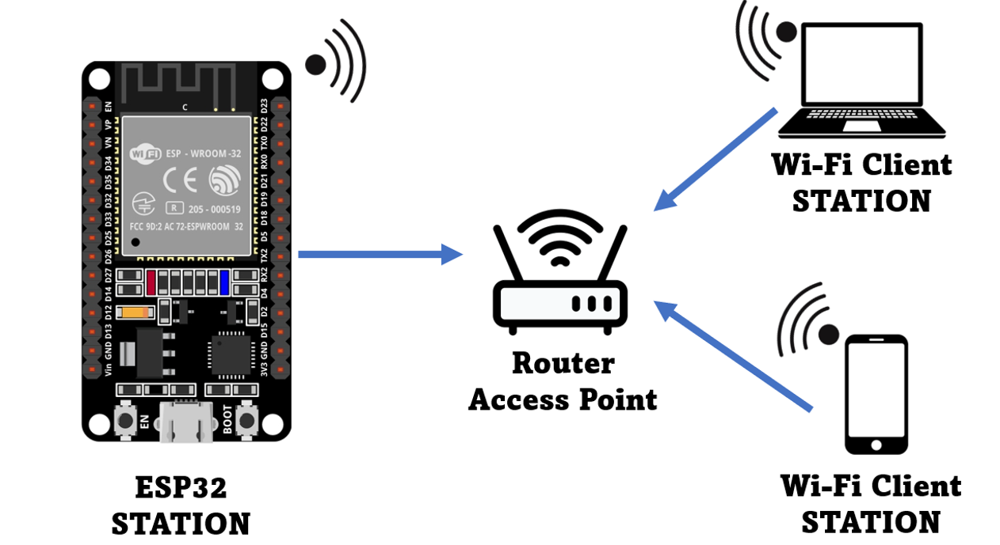

The Internet of Things (IoT) is a system of interconnected devices that can communicate with each other through the internet. IoT devices are typically equipped with sensors or actuators that can collect data, perform actions, or both. The data collected by IoT devices can be analyzed and used to optimize processes, improve efficiency, and provide new insights.
